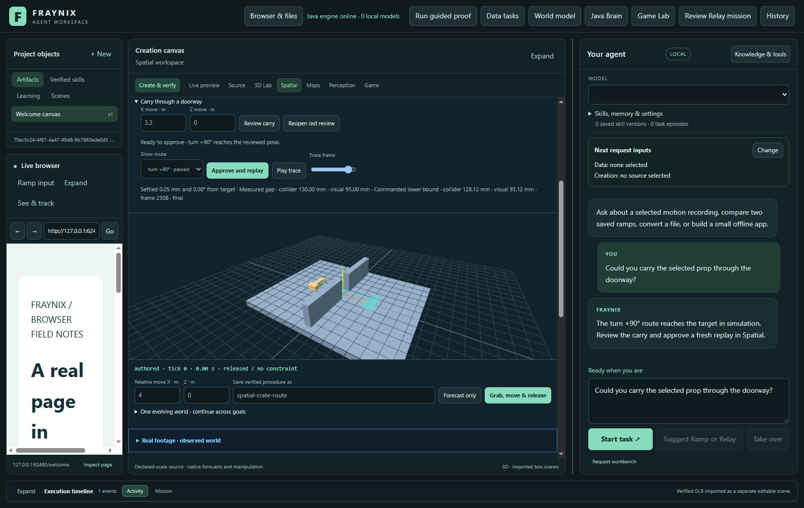
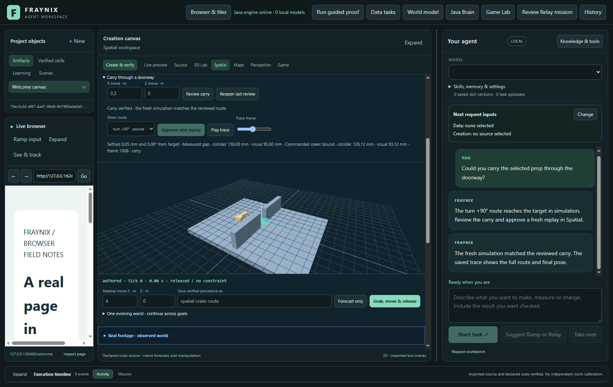
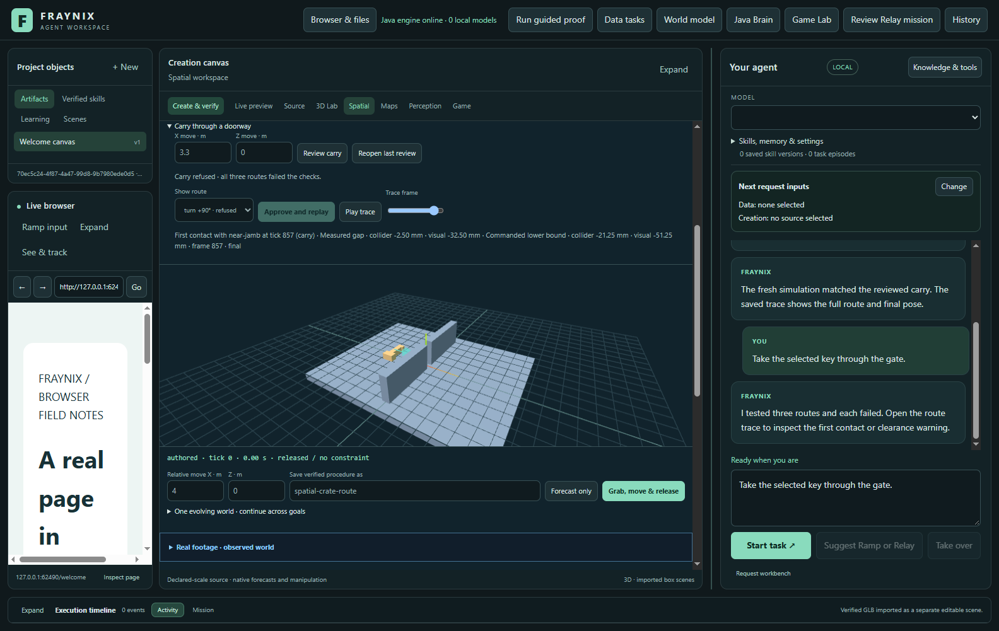

Carry a prop through a doorway
Compare a straight carry and two turns, review the measured path, then replay the approved motion after restart.
Three turns passed. Three narrow gates refused every route. A seventh gate refused on the visual envelope.

Review the successful turn before approving a fresh replay

The verified key crosses the gate with the approved turn

The blocked quarter-turn reports its first jamb contact
System files
Open source